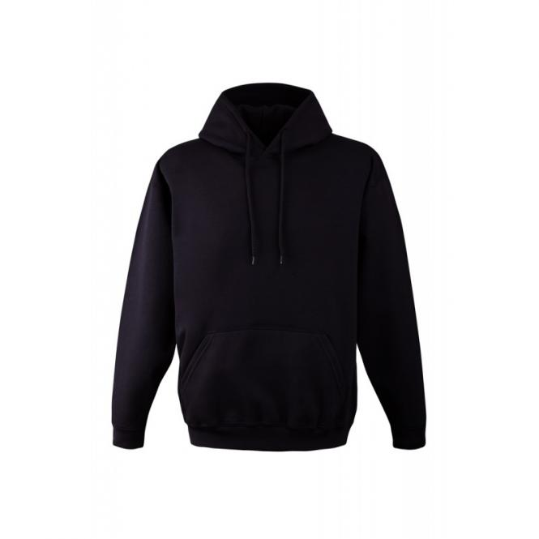

Bliuzonas su spauda. Unikalūs bliuzonai su Jūsų spauda!
 +37069848277 info@flagmanas.lt Krepšelis 0 Prekė Prekės (tuščia)
+37069848277 info@flagmanas.lt Krepšelis 0 Prekė Prekės (tuščia)
Prekių nėra
Turi būti nustatyta Pristatymas 0,00€ VisoKainos be PVM
Pirkti
Prekė sėkmingai pridėta į krepšelį
Kiekis VisoKrepšelyje yra 0 prekė (-ės). Krepšelyje yra 1 prekė.
Prekės viso (be PVM) Viso pristatymas (be PVM) Turi būti nustatyta Viso (be PVM) Tęsti apsipirkimą Pereiti prie apmokėjimo Paskyra Menu ProduktaiVėliavos
Vėliavos
Lietuvos vėliavos Lietuvos miestų vėliavos Regionų, apskričių ir rajonų vėliavos Horizontalios vėliavos pagal užsakymą Vertikalios vėliavos pagal užsakymą Šalių vėliavos Vimpilai (trikampės vėliavos) Organizacijų vėliavos Kariuomenės vėliavos Lenktynių vėliavos Stalinės vėliavėlės Gairelių gamyba Automobilinės vėliavos Popierinės vėliavėlės Fanų vėliavos Kitos vėliavos 2020 metų mažųjų Lietuvos kultūros sostinių vėliavosReklaminės vėliavos
Reklaminės vėliavos
Reklaminė vėliava Straight Reklaminė vėliava Shark Reklaminė vėliava Convex Reklaminė vėliava Drop Reklaminė vėliava Concave Reklaminė vėliava Angled Reklaminė vėliava Block ALU Reklaminė vėliava Curved ALU Reklaminės vėliavos paruoštais dizainais Stalinė reklaminė vėliava Straight Stalinė reklaminė vėliava Drop Automobilinė reklaminė vėliava Straight Automobilinė reklaminė vėliava Drop Prisiurbiama reklaminė vėliava Drop, su stoveliu 70 Prisiurbiama reklaminė vėliava Straight, su stoveliu 70 Prisiurbiama reklaminė vėliava Drop, su stoveliu 110 Prisiurbiama reklaminė vėliava Straight, su stoveliu 110 Reklaminė vėliava Straight su gnybtu Reklaminė vėliava Drop su gnybtuMobilūs stendai ir prekės parodoms
Roll Up stendai
Roll Up Popular mobilus stendas Roll Up Durable mobilus stendas Roll Up Elegance mobilus stendas Dvipusis Roll Up Elegance mobilus stendas Roll Up Giant mobilus stendas Stalinis Roll Up Elegance mobilus stendasFoto sienelės
Foto Sienelė Mini - 160 x 220 cm Foto Sienelė S21 - 210 x 210 cm Foto Sienelė S23 - 230 x 230 cm Foto Sienelė S25 - 250 x 230 cm Foto Sienelė S - 310 x 230 cm Foto Sienelė Maxi - 310 x 300 cm Foto Sienelė Grand Maxi - 400 x 300 cm Tekstiliniai stendai reklamai
Pastatomi stendai ir sėdmaišiai su gultais
Pastatomi stovai reklamai
Reklaminiai sėdmaišiai ir gultai
Sėdmaišis su spauda Comfy Sėdmaišis su spauda Cube Sėdmaišis su spauda Rounded Sėdmaišis su spauda Qubic Gultas su reklama PriedaiReklaminių vėliavų pagrindai
Reklaminių vėliavų pagrindai
Į žemę įkalamas pagrindas su sukikliu, 50 cm Į žemę įkalamas pagrindas su sukikliu, 60 cm Į žemę įgręžiamas plastikinis pagrindas su sukikliu Standartinis pagrindas su sukikliu Standartinis pagrindas su vandens balastu Kryžminis pagrindas "PREMIUM" su sukikliu Kryžminis pagrindas "CHROME" su sukikliu Metalinis pagrindas 30 x 30 cm be sukiklio Metalinis pagrindas 30 x 30 cm su sukikliu Metalinis pagrindas 35 x 35 cm su sukikliu Metalinis pagrindas 35 x 35 su vandens balastu Metalinis pagrindas 40 x 40 cm su sukikliu Guminis pagrindas 50 x 50 cm su sukikliu Metalinis pagrindas 50 x 50 cm su sukikliu Metalinis pagrindas 58 x 58 cm su sukikliu Plastikinis pagrindas užpildomas vandeniu Kryžminis vandens pagrindas su spyruokle Užvažiuojamas pagrindas su sukikliu Apvalus metalinis pagrindas su sukikliuReklaminių vėliavų aksesuarai
Reklaminių vėliavų aksesuarai
Reklaminės vėliavos stiebas Classic (nuo S iki XL dydžių) Reklaminės vėliavos stiebas Durable (nuo XS iki XL dydžių) Reklaminės vėliavos Block ALU stiebas Reklaminės vėliavos Curved ALU stiebas Transportavimo krepšys Vandens balastas (telpa 10l vandens, papildomam svoriui) Reklaminės vėliavos laikiklis prekybinėms pavėsinėms 30mm Reklaminės vėliavos laikiklis prekybinėms pavėsinėms 50mmVėliavų aksesuarai
Vėliavų aksesuarai
Vientisi vėliavų kotai ir fasadiniai stiebai Sujungiami vėliavų kotai (mediniai, aliuminiai, metaliniai) Vėliavų laikikliai Vėliavų stovai Kotų antgaliai (plastikiniai ir metaliniai) Gedulo juosta Mobilus vėliavos stiebas MEGA Stalinių vėliavėlių stovaiVėliavų stiebai
Vėliavos stiebas 6m, baltas Vėliavos stiebas 6m, pilkas Vėliavos stiebas 6m, rudas Vėliavos stiebas 6m, juodas Vėliavos stiebas 6m, baltas, su užraktu Vėliavos stiebas 6m, pilkas, su užraktu Vėliavos stiebas 6m, rudas, su užraktu Vėliavos stiebas 6m, juodas, su užraktu Vėliavos stiebas pagal užsakymąTrispalvės juostelės
Trispalvės juostelės
Trispalvė juostelė, 6 mm Trispalvė juostelė, 8 mm Trispalvė juostelė, 10 mm Trispalvė juostelė, 15 mm Trispalvė juostelė, 20 mm Trispalvė juostelė, 30 mm Trispalvė juostelė, 50 mm Trispalvė juostelė, 100 mm Trispalvė juostelė, 150 mmApsauginiai veido skydai
Spauda ant tekstilėsApdangalai su spauda
Apdangalai su spauda
Veido apdangalas su lietuviška atributika Veido apdangalas su gyvūnais Veido apdangalas su gamtos vaizdais Veido apdangalas su įvairiais vaizdais Veido apdangalas su Jūsų vaizdu Veido apdangalas su spauda Vytis Veido apdangalas su spauda Vytis II Veido apdangalas su spauda Juodas Vytis Veido apdangalas su spauda „Kaktusai“ Veido apdangalas su spauda „Gėlės“ Daugiau veido apdangalų dizainųSpauda ant reklaminių drabužių
Spauda ant reklaminių drabužių
Vyriški marškinėliai su spauda Moteriški marškinėliai su spauda Vyriški polo marškinėliai su spauda Moteriški polo marškinėliai su spauda Bliuzonas su spauda Bliuzonas su gobtuvu ir spaudaMedžiagų rūšys
Medžiagų rūšys
Standart vėliavinis Satinas Sunkus Drobė ArtCanvas AirTex (MESH) tekstilė Lighttex tekstilė Medvilnės Pojūčio trikotažas Medvilnės Pojūčio trikotažas LightTekstilė su spauda
Tekstilė su spauda
Trys Drugeliai AziTop Neon Geometrija Splashy Tricolor Saulėgrąžos Gulbės Elegancija Tropiniai Vaisiai Varpeliai Juodi Iksai Informacija Apie vėliavų gamybą Vėliavų gamyba Reklaminių vėliavų gamyba Vėliavų gamybai skirti audiniai Vėliavų tvirtinimai Užsisakykite internetu Reklaminių vėliavų modeliai Reklaminiu vėliavų matmenys Vėliavų ir kitų prekių pristatymas Mūsų klientai ir DUK Mūsų klientai DUK Vėliavų gamybos kokybė Atsisiuntimai Reklaminių vėliavų šablonai Vėliavų šablonai Galerija Kontaktai Blogas Spauda ant tekstilės > Spauda ant reklaminių drabužių > Bliuzonas su spauda Padidinti Ankstesnis TęstiBliuzonas su spauda
21,95€
Nuoroda:
Būklė: Nauja prekė
Dėmesio: Paskutinė prekė atsargose!
Pasiekiama:
Siųsti draugui
Siųsti draugui
Bliuzonas su spauda
Gavėjas :
Jūsų draugo vardas * :
Draugo el.pašto adresas * :
* Privalomi laukai
Siųsti arba Atšaukti
Specifikacijos Apie prekę Nuolaida perkant didesnį kiekį Modelis Bliuzonas su spauda Medžiagos Bliuzonai pagaminti iš medvilnės Spaudos technika Termo spauda (termolipdukas) arba tiesioginė spauda (DTG) Rinkitės iš 8 dydžių, bei 14 spalvų! (dydžių lentelę ir spalvas galite rasti ČIA ) Bliuzonai pagaminti iš medvilnės Rinkitės vienpusę arba dvipusę spaudą Du spaudos būdai: termo spauda (termolipdukas) arba tiesioginė spauda (DTG)Gamyboje naudojame du būdus: termo spaudą ir tiesioginę spaudą (DTG). Termo spaudos būdu logotipai ir vaizdai išpjaunami iš tekstilei skirtos specialios plėvelės, kurie vėliau su termo preso pagalba yra pernešami ant Jūsų drabužių. Tiesioginės spaudos būdu logotipai ir vaizdai yra tiesiogiai spausdinami ant Jūsų pasirinktų drabužių.
Pilną reklaminių drabužių katalogą galite rasti paspaudę ČIA . Kartu su spauda ant reklaminių drabužių siūlome ir mūsų maketuotojų paslaugą, kurie galės paruošti Jūsų reklaminių drabužių maketus.
Kaina pagal kiekį
Kiekis Nuolaida Sutaupote 10 1,00€ Iki 10,00€ 20 2,00€ Iki 40,00€ 30 2,40€ Iki 72,00€ 50 3,00€ Iki 150,00€ 100 3,40€ Iki 340,00€Pagrindo kaina
Kiekis Nuolaida Sutaupote 0 0 Iki 0 VĖLIAVŲ GARANTIJAVėliavų ir vėliavų stiebų specialistai įmonė "Dauksta" garantuoja, kad mūsų vėliavos gaminamos taikant aukščiausius kokybės standartus ir neturi analogų rinkoje. Mes norime, kad mūsų klientai būtų visiškai patenkinti mūsų vėliavomis ir susijusiais produktais, todėl rūpinamės jais teikdami aukščiausio lygio aptarnavimą.
Tačiau, kad nesusikurtų nerealūs lūkesčiai norime, kad mūsų klientai žinotų, kad jokia vėliava nėra „nesunaikinama“, o visos vėliavos vėliau ar anksčiau susidėvi veikiamos įvairių atmosferos reiškinių ir saulės spindulių. Aptarnaudami savo klientus įsipareigosime daryti viską, ką galime, kad klientai liktų patenkinti, tačiau negalime pasiūlyti nerealių ir neįmanomų dalykų tokių kaip: „Neribotas tarnavimo laikas“ ar "Amžinas aptarnavimas". Garantinis laikotarpis skaičiuojamas nuo vėliavos pristatymo (pardavimo) dienos. Mūsų vėliavų garantinė politika yra viena dosniausių ir išsamiausių rinkoje ir mes pilnai pasitikime savo produktais suteikdami jiems pilną ar dalinę garantiją, kaip nurodyta toliau.
PILNA GARANTIJA
„Dauksta“ garantuoja, kad visos pagamintos ir parduodamos vėliavos pilnai atitinka visas produkto specifikacijas, nurodytas mūsų pasiūlyme ir (arba) kataloge. Garantuojame, kad visos vėliavos, kurias gamina ir parduoda „Dauksta“, neturi medžiagų ir gamybos defektų. Tačiau jeigu tokie defektai atsiras, jie bus pašalinti
arba pakeisti (mūsų nuožiūra) nemokamai per 10 darbo dienų nuo gaminio pristatymo į įmonės buveinę momento, atsižvelgiant į apribojimus ir išimtis išdėstytas toliau.
APRIBOJIMAI IR IŠIMTYS Kadangi vėliava yra objektas veikiamas įvairių nekontroliuojamų veiksnių, todėl mūsų garantija turi kelias specifines išimtis:
1. Įprastas nusidėvėjimas dėl įprasto naudojimo;
- Visos lauke plazdančios vėliavos paprastai susidėvi veikiamos įvairių atmosferos reiškinių ir saulės spindulių, nors protinga vartotojo priežiūra ir veiksmai gali žymiai pailginti vėliavos gyvavimo laiką*
- Mes negalime pasiūlyti konkrečios „vėliavos tarnavimo laiko“ garantijos dėl įvairių sąlygų, su kuriomis tenka susidurti, ir priežiūros (arba jos nebuvimo), kurią vartotojas atlieka. Bendra taisyklė yra ta, kad StandartTex audinio, įprasto dydžio vėliavos (1x1,7 metro) gyvavimo trukmė turėtų būti 60–90 dienų, jei laikoma iškabinta nuo aušros iki sutemos, esant geroms oro sąlygoms. Rūpestingai prižiūrima vėliava atrodys geriau ir tarnaus ilgiau.
2. Pažeidimai, padaryti dėl netinkamo naudojimo, aplaidumo, netinkamo įrengimo, bandymų keisti gaminį, bandymų tvarkyti kitur nei įmonė „Dauksta“;
3. Žala padaryta avarijos, gaisro, vandens ar kitokių skysčių, intensyvaus taršos šaltinio, ar kitų nekontroliuojamų veiksnių;
4. Žala, padaryta dėl ekstremalių oro sąlygų, tokių kaip: audros, sniegas, rūgštus lietus, uraganai, tornadai, perkūnija, mikrobangos, žemės drebėjimai, kruša, cunamis ar kiti gamtos veiksmai. Garantija nepadengia vėliavai padarytos žalos, jei ji plevėsuoja arti stogo, pastato, medžio šakų arba jei ji liečiasi su bet kuriuo kitu objektu.
DALINĖ GARANTIJA
Be pilnos garantijos, mes taip pat siūlome dalinę 3 mėnesių garantiją didesnėms nei įprasto dydžio vėliavoms (1x1,7 metro). Didesnės vėliavos patiria didesnes apkrovas ir susidėvi greičiau. Tačiau jei šiuo laikotarpiu pastebimas didesnis nei įprastas nusidėvėjimas t.y. spalvos blukimas, pagrindinių siūlių ir tvirtinimų irimas mes savo sąskaita pataisysime arba pakeisime (savo nuožiūra) vėliavas. Mes pasiliekame teisę patys nustatyti trūkumus pagal pateiktas nuotraukas ir/ar pristatytas pačias vėliavas.
IŠSKIRTINĖS TEISĖS IR PROCEDŪROS
Visi įsipareigojimai pagal šią garantija bus vykdomi vienašališku įmonės "Dauksta" sprendimu keisti ar remontuoti gaminį. Nepavykus suremontuoti ar pakeisti gaminio ar jo dalies gali būti pasiūlyta Pirkėjui kompensuoti įsigijimo išlaidas. Remontui gali būti naudojamos naujos arba atnaujintos detalės.
Nuimtos dalys arba pakeistos prekės tampa įmonės "Dauksta" nuosavybe.
Įmonė "Dauksta" neatsako už prekių sugadinimą ar praradimą transportavimo metu.
--------
* Vėliavos priežiūros patarimai (pavyzdžiai):
- Plevėsuojanti vėliava: stebėkite, ar neatsiranda pirmųjų irimo požymių. Vėliavas galima apkirpti ir vėl apsiūti, tai žymiai pailgina vėliavos tarnavimo laiką;
- Vėjuotos dienos: Vėliavoms ypač kenkia gūsingas vėjas. Jei įmanoma, (esant stipriam vėjui, kurio gūsiai siekia iki 15 m/s greitį, vėliava turi būti nuleista iki stiebo vidurio, jei vėjo gūsiai stipresni kaip 15 m/s – vėliavą būtina nukabinti nuo koto/stiebo).
- Lietus ar sniegas: Norėdami geriausio rezultato, nelaikykite iškeltos savo vėliavos liūties ar pūgos metu. Po stipraus snygio ar liūties, nuimkite vėliavą ir išskleiskite, kad išdžiūtų. Negalima sulankstyti ir suvynioti šlapios vėliavos.
- Oro tarša: Norėdami sumažinti nešvarumų, oro, dūmų, automobilių išmetamų teršalų ir t.t. poveikį, vėliavas skalbkite dažniau (mechaninis skalbimas kas 14 dienų 30-40 °C temperatūroje, nenaudojant baliklių ir priemonių su chloru!). Turėti dvi vėliavas ir jas keisti yra labai rekomenduojama pratęsiant vėliavos gyvavimo laiką.
Naujienlaiškiai
Bendra informacija
Apie mus Privatumo politika Sąlygos ir taisyklės Siuntų kainos ir kitos prekių pristatymo sąlygos Klientų aptarnavimas © 2020 Dauksta. Visos teisės saugomos. SprendimasMano paskyra
Mano užsakymai Mano grąžinimai Mano suteiktos nuolaidos Mano adresai Mano asmeninė informacija Mano kuponai Facebook Twitter Youtube Google Plus InstagramSusisiekite su mumis
Mūsų pagalbos linija dirba visą per parą.
Telefonas: +44 7462 826167
Susisiekite su mūsų ekspertų komanda!DAUKSTA UAB
K. Grybausko g. 9Kaunas, 46299
Lietuva
Įmonės kodas: 134419433
PVM kodas: LT344194314
info@flagmanas.lt
Tel. nr.: +370 698 48277
